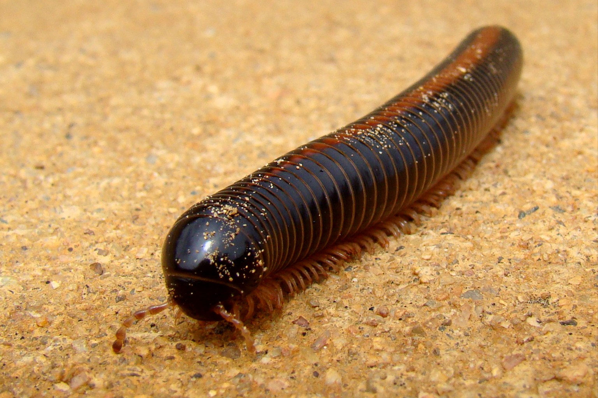

Giant African Millipede Substrate: Depth, Calcium and the Chamber They Moult In
A millipede burrows, eats the soil and hardens its shell with calcium from it. A shallow, calcium-poor substrate is a slow starvation of the exoskeleton.

A giant African millipede (Archispirostreptus gigas) needs a substrate layer that holds 70-80 % relative humidity at 24-28 °C, and adult animals want at least 10-15 cm of it — deeper than most people give them, and deep enough that the lower third stays damp when the surface dries. That depth is not for burrowing comfort. It is the only place the animal can build the humid chamber it moults in, and a moult that happens in dry litter is a moult that fails.
Six inches of coir and a lesson about lids
The animal that taught me this was a female I called Ten, because she was ten centimetres of segmented brown rope the day she arrived. I set her up in a 60 × 45 cm tub with about 6 cm of compressed coco fibre, misted twice a day, and felt clever. Three weeks later she went off food and stopped surfacing. I assumed she was stressed. She was moulting — and I had a hygrometer probe hanging 5 cm above the substrate, reading 65 %, while the bottom two-thirds was a dry brick. She came up after eleven days with two segments stuck together behind the head and a whitish patch I could not explain. I rehydrated that tub properly, deepened it to 14 cm, and she completed her next moult clean. The old substrate weighed nearly nothing when I finally pulled it out — dry coir is mostly air.
Why depth and moisture are one measurement, not two
Substrate depth is only half a number without knowing the moisture gradient inside it. A millipede's cuticle is thin, chitinous and unwaterproofed compared with an insect's — it loses water straight through the shell. When the animal moults, it secretes a new soft cuticle underneath the old one and then sheds the old shell in pieces. If ambient humidity at the moulting site is too low, the old cuticle sets hard against the new one and the animal cannot peel it cleanly. The new shell is also vulnerable before it tans — it hardens and darkens over several days, and during that window the animal cannot lose water fast or it dies. That is the whole mechanism: low humidity at the moulting site, incomplete ecdysis, stuck segments, and then death from water loss or from a segment that occludes the mouth.
Depth does two things at once. It lets the animal dig down to a wet layer, and it holds moisture in that layer for days rather than hours. In a shallow tray the top and bottom dry together.
Building the substrate: mix, depth and the gradient you can measure
My mix is roughly two parts compressed coco fibre to one part well-rotted leaf litter and a handful of hardwood sawdust per 10 L of substrate. The fibre holds water; the leaf litter gives structure so the tunnels do not collapse; the sawdust feeds the fungal and bacterial film the animal grazes on. Do not use fresh pine, cedar or potting soil with fertiliser pellets.
- Depth, by size class. Juveniles under 5 cm body length: 6-8 cm. Subadults 5-10 cm: 10-12 cm. Adults over 10 cm, and any animal preparing to moult: 12-15 cm minimum, in a container tall enough that they still have headroom above the surface.
- Hydration. Soak the compressed block, squeeze out the excess, and aim for a substrate that clumps when squeezed but releases no water when you press it. That is roughly 60-70 % moisture by feel — the equivalence I would defend in public is "a wrung-out sponge".
- The gradient check. Push a hygrometer probe 2-3 cm below the surface, not into the air. You want 80-90 % down there, and 70 % at the surface. The floor of the enclosure can be wetter than the surface.
- Rehydration cadence. Misting the surface twice a week tops up the top layer. Rehydrating the whole substrate — pouring water down one corner and stirring — every 4-6 weeks, or when the lower probe reads below 70 %.
One trap here is drainage. A sealed tub with 15 cm of wet substrate and no ventilation will become anaerobic in the lower half within a month, and you will smell it before the animal shows a symptom. Drill air holes above the substrate line, keep the wetter corner away from them, and let the layer breathe from the top.
The other piece of equipment I will not run without is a pair of probes, because the surface reading and the buried reading can differ by 20 % on the same afternoon:
Set one probe at the surface under a hide, one buried 3 cm, and read them at the same time of day for a week before you trust either.
Calcium: supplement, not a seasoning
Giant African millipedes are detritivores. In the wild they are processing leaf litter and decaying wood, and they take calcium from it because they need it to mineralise the new cuticle after ecdysis. If the calcium is not in the substrate, it is not in the animal. What I have not found is a single reputable controlled study giving a required dietary calcium level for A. gigas — the evidence is keeper experience and the general arthropod requirement for calcium during cuticle hardening. So I do not state a number as fact. I give one.
- What I do: one tablespoon of pure calcium carbonate powder per 10 L of substrate, mixed through, refreshed at each full substrate change. For animals I know are approaching a moult, a small dish of calcium carbonate in the enclosure so they can graze it directly.
- What I do not do: dust the food. They do not eat in a way that makes dusting reliable.
- What I do not add: reptile vitamin powders. Excess synthetic vitamin D is a real risk with no benefit here.
The failure mode of too little calcium is not easily seen until the moult — segments that come away malformed, or a cuticle that never fully hardens. By then it is too late to fix the current moult. Add it at substrate setup, not after a problem.
| Stage (body length) | Substrate depth | Target RH (buried probe) | Calcium carbonate | Handling |
|---|---|---|---|---|
| Juvenile, under 5 cm | 6-8 cm | 80-90 % | 1 tbsp / 10 L | Not at all; move with a leaf |
| Subadult, 5-10 cm | 10-12 cm | 80-90 % | 1 tbsp / 10 L | Minimal; a minute or two maximum |
| Adult, over 10 cm | 12-15 cm | 80-90 % | 1 tbsp / 10 L plus a dish | Brief, hand-warm, dry hands |
| Pre-moult (any size) | Add 2-3 cm | 85-90 % | Dish available | None until it resurfaces |
The pre-moult window and what to do with the animal that has gone
The first sign is usually behavioural: the animal stops its slow circuit, ignores food, and buries down and stays buried for days. A healthy adult can be under for one to three weeks before a moult. Do not dig it up to check. That is the single most common way keepers kill their own millipedes — disturbing an animal mid-ecdysis, tearing the old cuticle, and exposing a soft shell to dry air.
While it is under, keep the buried probe in its band and do not mist the surface so heavily that water pools. When it resurfaces, it may be paler than usual, and it will not eat for a day or two. Offer soft, moist leaf litter and leave it alone. A clean moult takes several days to tan; a sticky or crinkled patch after a week means the humidity was not there when it was needed. The article image of a "pale" millipede that is suddenly attractive on the surface is almost always a freshly moulted animal that should still be hidden.
For the clean-up crew half of the enclosure: springtails are useful, but a bioactive millipede tub is mostly the millipede's own ecosystem — the leaf litter, the fungi, the deeper damp layers. Get the substrate biology right first; the crew is a bonus, not a fix for a wet, sealed tub.
What the moult cannot tell you
I will be honest about the limits of my own notes. I have not found a way to predict a moult before the burying behaviour starts, and I have seen the same animal bury for a week and not moult at all. If you are seeing repeated stuck segments across multiple moults, look at the substrate and the buried humidity before you look at diet. If a single moult goes wrong and the setup is correct, watch the next one.
Frequently asked questions
How deep does giant African millipede substrate really need to be?
For an adult over 10 cm body length, 12-15 cm of coco fibre and leaf litter is the working minimum, and I use the upper end. Smaller animals can manage with 6-12 cm. The depth only works if the lower third stays at 80-90 % relative humidity, which you verify with a buried hygrometer probe, not by feel.
Does the calcium need to be in the substrate or in a dish?
Both, in practice. Mix one tablespoon of pure calcium carbonate per 10 L into the substrate at setup, and offer a small dish once the animal is within a week or two of a moult. Millipedes take calcium from the leaf litter they eat, so substrate intake matters more than a dish they may ignore.
Can I use potting soil as the base?
No. Most potting soils contain slow-release fertiliser pellets and moisture-retaining gels that millipedes will ingest. Compressed coco fibre rehydrated at home is the base I recommend, with well-rotted leaf litter and a little hardwood sawdust added for structure and food. Fresh pine and cedar are also out.
What we actually use
Three pieces of equipment that do most of the work in a Giant African Millipede setup. Nothing here is here because a brand asked.
-
Check price on AmazonHabitat & Decor
Coco Fibre Substrate Block
The base of the substrate: 10–15 cm of it, damp enough to hold a burrow without collapsing.
Typical price $8–15 -
Check price on AmazonHabitat & Decor
Digital Hygrometer & Thermometer, 2-pack
Below 70 % the moulting chamber dries and the new cuticle hardens before the animal is out of the old one.
Typical price $16–28 -
Check price on AmazonHabitat & Decor
Snug Hide Cave, Medium (pair)
Cork bark on the surface gives a humid retreat above ground while the deep layer does the rest.
Typical price $14–24
Links open Amazon in a new tab. We do not set or track prices.
Affiliate disclosure. As an Amazon Associate, we earn from qualifying purchases. Every card in this guide is an affiliate link — it costs you nothing, and we only list gear we have run in our own enclosures.